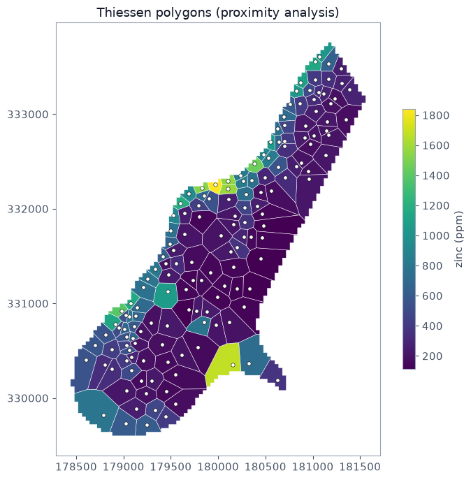

TrendSurface, Thiessen polygons, NearestNeighbor, IDW, ThinPlateSpline, one shared interface. This notebook is Part 7, Spatial Interpolation (Chapter 7.3 of 8). The worked example uses meuse.csv (155 topsoil samples, Meuse floodplain, EPSG:28992) predicted onto meuse_grid.csv (3,103 cells, 40 m). The methods come from geolattice.spatial_statistics.interpolate.
Overview
Six deterministic rules for turning point measurements into a surface. A polynomial trend is a global regression. Thiessen polygons and nearest neighbour copy the closest sample. TIN and IDW blend nearby samples. The thin-plate spline bends a smooth sheet through every observation. None of them models spatial correlation explicitly (Chapter 7.1, Section 6), and all of them share one interface so they can be swapped freely. TIN is the linear cousin of natural-neighbour interpolation; Sibson natural neighbour is not implemented here.
The worked example is topsoil zinc (ppm) on the Meuse River floodplain in the Netherlands: the meuse data from the gstat and sp examples. Coordinates in meuse.csv are already in metres (Amersfoort / RD New, EPSG:28992), so distance-based methods need no reprojection. Every map below predicts at the cell centres in meuse_grid.csv, the 40 m floodplain lattice, rather than on a filled rectangle around the samples.
Method
Idea
Exact?
Extrapolates smoothly?
TrendSurface
Least-squares polynomial in \(x\) and \(y\)
No
Yes: and without bound
Thiessen
Voronoi cell of the nearest sample
Yes
No: sharp polygon boundaries
NearestNeighbor
The same partition, evaluated on the floodplain grid
Locate the repository root, import the spatial-statistics helpers, and point DATA at the example files.
Installation. This notebook needs installation option 3 (core, spatial analysis and spatial statistics): pip install "geolattice[statistics]". See “Installation options” in the GeoLattice README.
Code
import sysfrom pathlib import Pathimport numpy as npimport pandas as pdimport matplotlib.pyplot as pltROOT = Path.cwd().resolve()for candidate in [ROOT, *ROOT.parents]:if (candidate /"pyproject.toml").is_file() and (candidate /"Data").is_dir(): ROOT = candidatebreakelse:raiseFileNotFoundError("Could not find the GeoLattice repository root.")sys.path.insert(0, str(ROOT))DATA = ROOT /"Data"/"00_shared"/"data_spatial_stat"import geolattice.spatial_statisticsfrom geolattice.viz import apply_map_stylefrom geolattice.spatial_statistics.interpolate import ( TrendSurface, Thiessen, NearestNeighbor, TIN, IDW, ThinPlateSpline,)apply_map_style()COLORS = {"blue": "#2b6cb0", "red": "#c0392b", "green": "#2f855a", "orange": "#dd6b20","grey": "#718096", "purple": "#6b46c1", "teal": "#2c7a7b"}meuse = pd.read_csv(DATA /"meuse.csv")grid = pd.read_csv(DATA /"meuse_grid.csv")coords = meuse[["x", "y"]].to_numpy(dtype=float)values = meuse["zinc"].to_numpy(dtype=float)grid_xy = grid[["x", "y"]].to_numpy(dtype=float)_xs = np.sort(grid["x"].unique())_ys = np.sort(grid["y"].unique())_dx, _dy =float(_xs[1] - _xs[0]), float(_ys[1] - _ys[0])EXTENT = (_xs[0] - _dx /2, _xs[-1] + _dx /2, _ys[0] - _dy /2, _ys[-1] + _dy /2)def to_raster(pred) -> np.ndarray:"""Place predictions for the meuse_grid cells on the 40 m lattice (NaN off the floodplain).""" raster = np.full((len(_ys), len(_xs)), np.nan) raster[np.searchsorted(_ys, grid_xy[:, 1]), np.searchsorted(_xs, grid_xy[:, 0])] = predreturn rasterprint(f"geolattice.spatial_statistics : version {geolattice.spatial_statistics.__version__}")print(f"n = {len(coords)} samples, {len(grid_xy)} prediction cells at {_dx:.0f} m")print(f"zinc: {values.min():.0f} to {values.max():.0f} ppm")
geolattice.spatial_statistics : version 0.3.49
n = 155 samples, 3103 prediction cells at 40 m
zinc: 113 to 1839 ppm
One Interface for Every Method
Every interpolator in this Part: the deterministic methods here, geostatistical prediction in Chapter 7.4, shares the same four methods: .fit(coords, values), .predict(new_coords), .predict_grid(region, ...), and .clone() / .get_params() (the same scikit-learn-style pattern Part 6’s GW models used). This is what lets Chapter 7.5’s cross_validate and compare_methods treat every method identically. Thiessen.polygons is the one extra method: proximity analysis wants the polygons, not only a raster.
The maps in this chapter call .predict(grid_xy) at the floodplain cell centres in meuse_grid.csv. .predict_grid is the same prediction step on a rectangle you build yourself when you do not already have a target lattice.
degree=1 is a tilted plane, degree=2 adds curvature, degree=3 adds more flex. The fit is least squares, so the surface does not pass through the samples unless they already lie on a polynomial of that degree. r2_ is the in-sample coefficient of determination. Because the polynomial is global, raising the degree lets it swing between samples and, especially, past the cloud of points.
degree 2 in-sample R^2 = 0.423
prediction range: -27.6 to 1198.4 (observed range: 113.0 to 1839.0)
The linear surface is a single tilt across the floodplain. Zinc is high in sediment near the river and lower on the ground farther away, and that pattern does not line up with one plane in the map coordinates: the in-sample \(R^2\) is about 0.20. A quadratic raises \(R^2\) to about 0.42, and a cubic only a little further, to about 0.46. The degree-2 fit stays positive at the samples, but on the prediction grid the same polynomial runs below zero (about −28 ppm, with 32 of the 3,103 floodplain cells negative). A global polynomial is not bounded by the data. The thin-plate spline shows a milder version of that overshoot later.
Proximity Analysis: Thiessen Polygons
Thiessen (Voronoi) polygons partition the map so that every location belongs to its nearest sample. The polygon inherits that sample’s zinc value. This is the classical proximity analysis: service areas, “which sample represents this place,” and a piecewise-constant surface. The cells below are clipped to the floodplain covered by meuse_grid.csv, the union of the 40 m prediction cells.
155 polygons, one per sample, clipped to the floodplain grid

Nearest Neighbour
The simplest possible interpolator: every prediction location copies its closest observation’s value exactly. It is the raster of the Thiessen partition from the previous section: every grid cell copies the value of the sample whose polygon contains it. Thiessen.predict and NearestNeighbor.predict return the same numbers.
The sharp polygon boundaries are the Voronoi cell edges made visible: exactly where the nearest sample switches from one to another. This is a useful sanity check and a fast fallback, but as an interpolator it throws away every piece of information except “which sample is closest,” ignoring every other nearby reading entirely.
TIN (Delaunay Linear)
TIN builds a Delaunay triangulation over the samples and interpolates linearly within each triangle: the piecewise-linear analogue of natural-neighbour interpolation (true Sibson natural-neighbour interpolation is not implemented in this library). Outside the convex hull of the samples, no triangle exists, so TIN falls back to its fill strategy ('nearest' by default). On this floodplain that fill shows up along the edges of the grid that sit outside the hull.
Within the triangulated interior, TIN produces a much smoother-looking surface than nearest-neighbour: no sharp cell boundaries, just continuous linear gradients between samples. The boundary between the triangulated interior and the fill="nearest" exterior is visible as a subtle change in texture near the domain edges, worth remembering when interpreting predictions far from any sample.
power controls how sharply influence falls off with distance; k limits the weighted average to the \(k\) nearest neighbours (all samples contribute if k=None); radius instead caps the neighbourhood by distance.
Higher power sharpens the local “bullseye” pattern around each sample: at power=4, the surface looks almost like a smoothed version of nearest-neighbour’s Voronoi cells, since distant samples contribute negligible weight. Lower power produces a much smoother, more globally averaged surface. Chapter 7.5 tunes this trade-off by cross-validated RMSE rather than by eye.
Thin-Plate Spline
The thin-plate spline is, informally, the smoothest possible surface that still passes through every observation: imagine bending a thin metal sheet to touch every data point while minimizing total curvature. ThinPlateSpline is an RBF with the thin-plate kernel. smoothing > 0 relaxes the exact-interpolation requirement (Chapter 7.1, Section 5), useful when the observations themselves are noisy.
prediction range: -33.6 to 1976.8 (observed range: 113.0 to 1839.0)
Notice the predicted range printed above: the thin-plate spline’s global smoothness constraint lets it overshoot past the observed data range, especially toward the edges of the floodplain (visible as unusually bright or dark patches far from any sample): and here it overshoots badly enough to predict a physically impossible negative zinc concentration on part of the grid, despite every observed value being strictly positive (113 to 1,839 ppm). The polynomial trend can do the same thing. IDW and TIN, being local weighted averages bounded by their neighbours’ values, structurally cannot.
Side by side, the trade-off is visible directly: the trend’s broad gradients, Thiessen’s sharp service areas (the polygon layer and the nearest-neighbour raster are the same partition), TIN’s angular facets, IDW’s smooth bullseyes, and the spline’s very smooth but occasionally overshooting surface. None of these panels carries a confidence statement: that is exactly what Chapter 7.4’s kriging adds. Chapter 7.5 replaces “which looks smoothest” with an honest, cross-validated answer to “which actually predicts best.”
Summary and Conclusions
This chapter fit the deterministic interpolators on the 155 Meuse topsoil samples and predicted zinc on the same 3,103-cell floodplain grid, through one shared interface.
What we did
Confirmed every interpolator in this Part shares .fit / .predict / .predict_grid / .clone / .get_params.
Fit polynomial trend surfaces of degree 1, 2, and 3 and read the in-sample \(R^2\).
Built the Thiessen polygon layer (proximity analysis), clipped to the floodplain, and the matching nearest-neighbour raster.
Mapped TIN, IDW at three power values, and the thin-plate spline on the same samples and meuse_grid.csv.
Found the thin-plate spline predicts a physically impossible negative zinc value on part of the floodplain, despite every observed value being strictly positive. A polynomial trend surface can overshoot for the same reason. The local methods (IDW, TIN, Thiessen) stay inside the range of the observations they use.
Compared the surfaces on a shared color scale.
Practical takeaways
A trend surface describes the broad gradient. It is the wrong tool when the question is the value at a place between samples.
Thiessen polygons answer “which sample is closest.” Nearest neighbour is that answer on a grid.
Higher IDW power values behave more like nearest neighbour; lower values behave more like a broad smoothing average. Treat power as a tunable hyperparameter (Chapter 7.5), not a fixed convention.
Watch for spline and high-degree trend overshoot in sparse regions before treating the surface as a usable concentration.
None of these methods produces a prediction variance. Every map here is a single best guess.
Next steps
Chapter 7.4 (Geostatistical Interpolation) introduces the semivariogram and ordinary kriging: the method that finally delivers the prediction uncertainty Chapter 7.1 argued deterministic methods cannot provide.
Further reading
Textbooks
Reference
Notes
Chorley, R. J. and Haggett, P. (1965). Trend-surface mapping in geographical research. Transactions of the Institute of British Geographers, 37.
Polynomial trend surfaces as a geographical method
Thiessen, A. H. (1911). Precipitation averages for large areas. Monthly Weather Review, 39.
The polygon proximity method
Shepard, D. (1968). A two-dimensional interpolation function for irregularly-spaced data. Proceedings of the 1968 ACM National Conference.
The original inverse-distance-weighting formulation
Duchon, J. (1977). Splines minimizing rotation-invariant semi-norms in Sobolev spaces. In Constructive Theory of Functions of Several Variables. Springer.
Thin-plate splines
Sibson, R. (1981). A brief description of natural neighbour interpolation. In Interpreting Multivariate Data. Wiley.
The natural-neighbour method TIN’s linear interpolation approximates
In this library
Object
Role
TrendSurface, Thiessen, thiessen_polygons
Polynomial trend and proximity polygons
NearestNeighbor, TIN, IDW, ThinPlateSpline
The other surfaces in this chapter
Chapter 7.4
Adds the prediction variance these methods cannot provide
Chapter 7.5
Replaces visual comparison with cross-validated RMSE